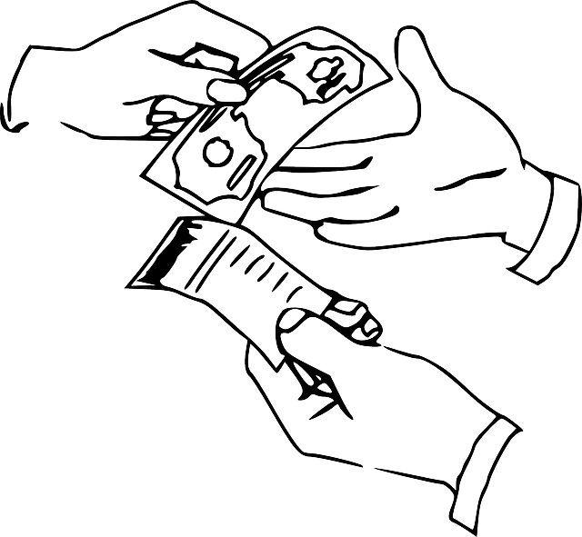
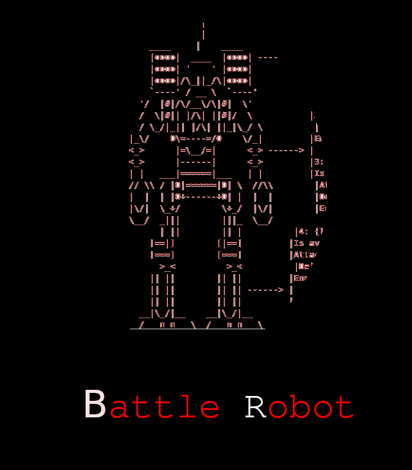

Projetos
-

Neste curso aprendemos a trabalhar com estruturas de repetição, condicionais, variáveis. Aprendendo a pensar de forma logica.No projeto realizado durante o curso, desenvolvemos um jogo simples usando o canvas e o JavaScriptConfira
-

Durante o curso de java, aprendemos os conceitos básicos da linguagem. O curso teve como ênfase a passar os conceitos de programação orientada a objeto, mostrando também a parte de herança e polimorfismo, não deixando de apresentar as principais bibliotecas da linguagem como a java.lang e a java.util, no final do curso realizamos a montagem de um conversor de moedas usando a IDE eclipse. Confira
-

Durante o curso de java, aprendemos os conceitos básicos da linguagem. O curso teve como ênfase a passar os conceitos de programação orientada a objeto, mostrando também a parte de herança e polimorfismo, não deixando de apresentar as principais bibliotecas da linguagem como a java.lang e a java.util, no final do curso realizamos a montagem de um conversor de moedas usando a IDE eclipse. Confira
-
Neste curso de CSS e HTML aprendemos a fazer uma página estática utilizando o css e o html personalizando ela e a deixando responsiva, no final do curso fizemos o site da "Barbearia alura". Confira
-

Conheça esse incrível jogo de turnos, onde o robô que ficar sem energia primeiro perde. usamos para esse projeto a linguagem python junto do Google Colabs para aprendermos um pouco sobre essa ferramenta Confira
©Copyright